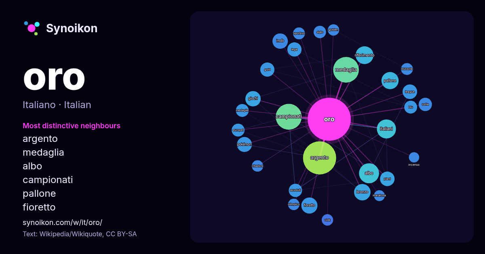

Italiano · elenco delle parole del giorno
oro
“gold” · Le parole trovate attorno ad essa in 1370 occorrenze da Wikipedia, Wikiquote.

Vicini più caratteristici
- argento 83×
- medaglia 35×
- albo 34×
- campionati 31×
- pallone 24×
- fioretto 23×
- imdb 21×
- italiani 19×
- pokémon 18×
- riferimento 17×
- bronzo 17×
- gold 16×
- ostia 16×
- assoluti 15×
- siglo 14×
- piani 13×
- medaglie 13×
- bussola 13×
- ciok 12×
- lega 12×
× = quante volte più spesso che nel testo generale di Wikipedia.
Vicini più frequenti
- argento 93
- campionati 57
- medaglia 56
- film 36
- albo 34
- italiani 31
- riferimento 27
- pallone 25
- bronzo 23
- fioretto 22
- premio 21
- giochi 20
- imdb 20
- pokémon 19
- league 18
- piani 18
- gold 17
- italiano 17
- lega 17
- progetto 16
Nel contesto
- Disambiguazione – Se stai cercando altri significati, vedi Oro (disambigua). Questa voce o sezione sull'argomento chimica non cita le fonti necessarie Wikipedia snippets · Oro
- titolo. Oro – in araldica 4733 ORO – asteroide della fascia principale Oro – elemento chimico di numero atomico 79 (simbolo Au) Oro – colore Oro (Wall Street) Wikipedia snippets · Oro (disambigua)
- Voce principale: Polizia di Stato. Il Gruppo Sportivo Fiamme Oro è il gruppo sportivo della Polizia di Stato. Fondato nel 1954, comprende 43 discipline Wikipedia snippets · Gruppo Sportivo Fiamme Oro
- Disambiguazione – Se stai cercando premi omonimi, vedi Pallone d'oro (disambigua). Il Pallone d'oro (Ballon d'Or in francese), noto in precedenza anche come Wikipedia snippets · Pallone d'oro
- delle fonti. Segui i suggerimenti del progetto di riferimento. Il colore oro, nelle leghe ternarie, cambia in modo regolare da una tonalità rossiccia Wikipedia snippets · Oro (colore)
- Villa Oro è una villa napoletana locata a Posillipo lungo via Orazio e costruita su uno sperone che guarda a mare. Voluta dal dottor Augusto Oro, medico Wikipedia snippets · Villa Oro
- 2025. ^ (EN) Andrea Settembre - Oro oro, su musixmatch.com. ORO ORO, su YouTube, Google LLC, 16 maggio 2024. (EN) Oro oro, su Genius.com. Portale Musica: Wikipedia snippets · Oro oro
- Panna Oro Cruscoro Oro Ciok Latte Oro Ciok Nocciola Oro Ciok Fondente Oro Cacao & Riso Croccante Oro Double Oro Cereacol Oro Saiwa Le Biscotte Oro Sandwich Wikipedia snippets · Oro Saiwa
Altre parole
Precalcolato il 2026-10-09 con le impostazioni predefinite (±5 parole, corpus medio). La mappa interattiva può aggiornarlo con dati in tempo reale.
Interfaccia tradotta automaticamente; correzioni benvenute.